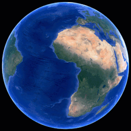
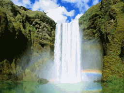

Por qué se celebra esta fecha y su significado para los seres humanos
El Día Internacional de la Madre Tierra encuentra su origen en el auge del movimiento ecologista que emergió en Estados Unidos hacia fines de los años 60. Ante la creciente preocupación por los daños al entorno natural, el senador Gaylord Nelson impulsó la realización de una jornada nacional de reflexión, que se concretó el 22 de abril de 1970 con una masiva participación ciudadana.

Significado y objetivos actuales
La celebración del Día Internacional de la Madre Tierra busca fomentar una conciencia global sobre los desafíos ambientales que enfrenta el planeta, como el cambio climático, la pérdida de biodiversidad y la contaminación. La jornada enfatiza la importancia de adoptar un enfoque holístico que reconozca la interdependencia entre los seres humanos y los ecosistemas naturales.
Además, promueve la implementación de políticas y prácticas que respeten los límites ecológicos y aseguren la sostenibilidad de los recursos naturales para las generaciones futuras. El Día de la Madre Tierra también sirve como una plataforma para destacar iniciativas exitosas en conservación y para inspirar acciones individuales y colectivas en pro del medio ambiente.
